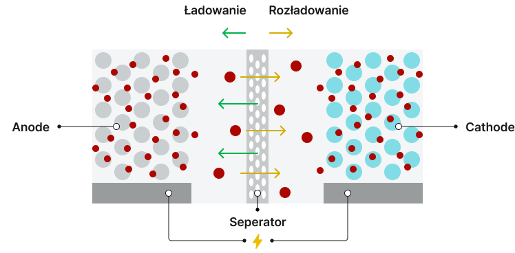
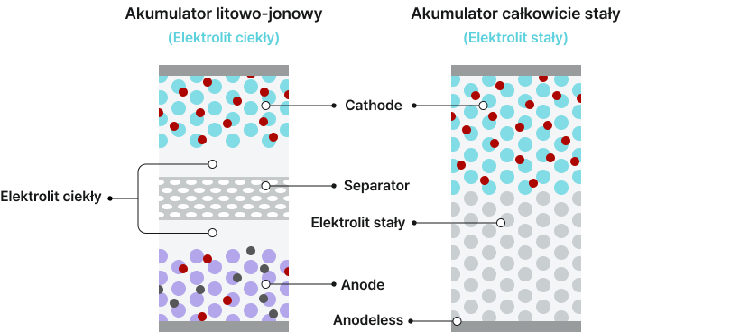
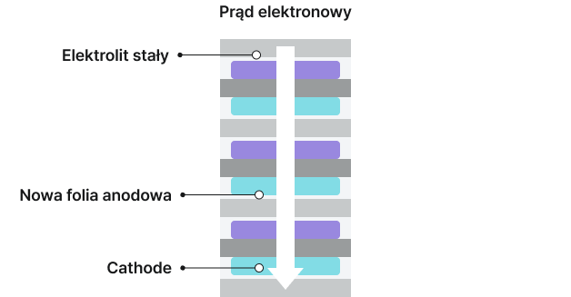

LG Energy Solution rozwija technologię akumulatorów sodowo-jonowych o doskonałych właściwościach wysokonapięciowych i pracy w niskich temperaturach, jednocześnie zapewniając wyróżniającą się konkurencyjność kosztową. Zaczynając od produktów 12V, naszym celem jest zdobycie wiodącej pozycji na rynku ESS oraz akumulatorów dla mobilności przyszłości.
LG Energy Solution to firma dostarczająca kompleksowe rozwiązania energetyczne,
która buduje ekosystem energetyczny dzięki technologii zorientowanej na klienta,
globalnym zintegrowanym operacjom i zrównoważonemu rozwojowi.
Bateria przyszłości
LG Energy Solution przyspiesza rozwój innowacyjnego portfolio baterii nowej generacji opartego na najnowocześniejszych technologiach. Tworząc bezpieczniejsze, bardziej wydajne, wysokowydajne i opłacalne baterie nowej generacji, dążymy do przybliżenia ery mobilności przyszłości.
Akumulator sodowo-jonowy
Akumulatory sodowo-jonowe wykorzystują sód, który jest obficie dostępny na Ziemi, zamiast litu, co obniża koszty surowców przy jednoczesnym zapewnieniu wyjątkowych osiągów przy dużym obciążeniu i w niskich temperaturach.

Kluczowe cechy technologii akumulatorów sodowo-jonowych
(Komercjalizacja 2027)

Wysoka konkurencyjność kosztowa
Przewaga kosztowa dzięki zastosowaniu sodu, którego cena jest niższa niż 1/100 ceny litu.

Doskonała wydajność przy dużym obciążeniu i w niskich temperaturach
Zastosowanie materiałów z twardego węgla i elektrolitów sodowo-jonowych umożliwia uzyskanie wyjątkowych właściwości wysokonapięciowych i pracy w niskich temperaturach.

Zrównoważone materiały
Zrównoważony rozwój dzięki wykorzystaniu powszechnie dostępnych zasobów sodu i składu wolnego od kobaltu.
Rozszerzanie zastosowań w oparciu o doskonałą wydajność przy dużym obciążeniu i w niskich temperaturach
Dzięki wyjątkowej wydajności akumulatorów sodowo-jonowych przy dużym obciążeniu i w niskich temperaturach LG Energy Solution dąży do uzyskania wyróżniającej się konkurencyjności kosztowej oraz do rozszerzenia oferty od produktów 12V po rynek ESS i segment niedrogich pojazdów elektrycznych.

Akumulator 12V

Niedrogie EV

System magazynowania energii
Akumulator całkowicie stały
LG Energy Solution rozwija wysokowydajną technologię akumulatorów całkowicie stałych na bazie siarczków, charakteryzujących się wysoką gęstością energii, bezpieczeństwem i doskonałą trwałością w wysokich temperaturach, z planami szybkiej komercjalizacji. Poza segmentem premium pojazdów elektrycznych wysokiej wydajności zastosowania rozszerzą się na statki elektryczne, ESS i inne branże, otwierając nowe możliwości dla akumulatorów nowej generacji.
Akumulatory całkowicie stałe to akumulatory wtórne wykorzystujące elektrolity stałe pomiędzy katodą i anodą, oferujące mniejsze ryzyko zapłonu, wyższą gęstość energii i możliwość osiągnięcia dużej pojemności.

Kluczowe cechy technologii akumulatorów całkowicie stałych
(Komercjalizacja 2029)

Zwiększone bezpieczeństwo
Poprawione bezpieczeństwo i kontrola nad ucieczką termiczną dzięki zastosowaniu elektrolitów stałych.

Wysoka gęstość energii
Osiągnięcie wysokiej gęstości energii dzięki konstrukcji bezanodowej.

Szybkie ładowanie
Umożliwia ultraszybkie ładowanie w mniej niż 20 minut dzięki doskonałej trwałości w wysokich temperaturach.
Rozszerzanie zastosowań w oparciu o bezpieczeństwo i trwałość w wysokich temperaturach
Dzięki wyjątkowemu bezpieczeństwu i trwałości w wysokich temperaturach akumulatory całkowicie stałe zwiększają bezpieczeństwo na poziomie systemu i upraszczają systemy zarządzania ciepłem. Wykorzystując te zalety, zastosowania rozszerzą się z segmentu wysokowydajnych pojazdów elektrycznych premium na statki elektryczne i systemy ESS.
Wysokowydajne EV

Statek elektryczny
System magazynowania energii
Akumulator bipolarny
LG Energy Solution dąży do dostarczania bardziej wydajnych i innowacyjnych rozwiązań bateryjnych dla mobilności przyszłości poprzez rozwój technologii akumulatorów bipolarnych, które umożliwiają systemy wysokonapięciowe o uproszczonej strukturze, zwiększając tym samym konkurencyjność kosztową i znacząco wydłużając zasięg.
Akumulatory bipolarne uzyskują wysokie napięcie dzięki połączeniom szeregowym wewnątrz ogniwa, co zwiększa zasięg i konkurencyjność kosztową na poziomie systemu bateryjnego.

Kluczowe cechy technologii akumulatorów bipolarnych
(Komercjalizacja 2028)

Poprawiona konkurencyjność kosztowa
Maksymalizacja przewagi kosztowej dzięki zastosowaniu tańszych materiałów, wdrażaniu ogniw o wysokiej energii oraz uproszczeniu procesów i struktur pakietów.

Zwiększone wykorzystanie przestrzeni
Uproszczenie wewnętrznych struktur pakietów dzięki dużej powierzchni projektowi bipolarnemu, co poprawia efektywność przestrzenną.

Wzmocnione bezpieczeństwo
Zwiększone bezpieczeństwo poprzez zastosowanie elektrolitów półstałych.
Zwiększone wykorzystanie przestrzeni dzięki zróżnicowanej strukturze ogniw
kumulatory bipolarne umożliwiają wdrażanie systemów wysokonapięciowych o uproszczonej strukturze, poprawiając wykorzystanie przestrzeni ogniw na poziomie pakietu, a jednocześnie zmniejszając liczbę komponentów. To jednocześnie zwiększa gęstość energii i obniża koszty produkcji. Dzięki tym zaletom LG Energy Solution planuje rozszerzyć zastosowania poza niedrogie EV na pojazdy użytkowe, takie jak elektryczne ciężarówki, gdzie kluczowe znaczenie mają systemy wysokonapięciowe i efektywność przestrzenna.
Struktura połączeń szeregowych akumulatora bipolarnego
Akumulator litowo-jonowyStruktura równoległa

Pionowe stosy bloków ogniw
Akumulator bipolarnyStruktura szeregowa

Poziome stosy bloków ogniw
Zastosowania

EV

Elektryczna ciężarówka
Akumulator litowo-siarkowy
LG Energy Solution rozwija komercjalizację technologii akumulatorów litowo-siarkowych, które zapewniają wysoką gęstość energii w przeliczeniu na jednostkę masy, dzięki czemu są lekkie, a jednocześnie zdolne do generowania dużej mocy chwilowej. Technologia ta napędzi innowacje w przyszłych środkach transportu, takich jak samoloty i miejska mobilność powietrzna (UAM).
Akumulatory litowo-siarkowe wykorzystują lekkie materiały, takie jak kompozyty siarkowo-węglowe w katodzie i metaliczny lit w anodzie, osiągając ponad dwukrotnie większą gęstość energii niż konwencjonalne akumulatory litowo-jonowe.

Kluczowe cechy technologii akumulatorów litowo-siarkowych
(Komercjalizacja 2029)

Zwiększona gęstość energii w przeliczeniu na jednostkę masy
Ponad dwukrotnie większa gęstość energii właściwej niż w akumulatorach litowo-jonowych, co pozwala na znacznie większą pojemność przy tej samej masie.

Wyjątkowa lekkość
Zastosowanie lekkich materiałów, takich jak siarka i węgiel, zamiast tlenków metali w katodzie.

Wysoka konkurencyjność kosztowa
Wykorzystanie obfitej i taniej siarki w celu obniżenia kosztów produkcji akumulatorów.
Pionierskie wejście na nowe rynki dzięki lekkości i konkurencyjności kosztowej
Dzięki wyjątkowej lekkości i konkurencyjności kosztowej akumulatory litowo-siarkowe znajdą pierwsze zastosowanie w wysokościowych bezzałogowych statkach powietrznych (UAV) oraz UAM, a następnie rozszerzą się na szerszy rynek mobilności lotniczej, wspierając elektryfikację przyszłego transportu.

HALE UAV
(BSP wysokiego pułapu)

UAM
Udany test lotu wysokościowego UAV zasilanego akumulatorem litowo-siarkowym (2020)
W 2020 roku LG Energy Solution (wówczas LG Chem) z powodzeniem zademonstrowało potencjał technologii litowo-siarkowej, zasilając wysokościowy, długodystansowy solarny UAV opracowany przez Korea Aerospace Research Institute. Lot testowy trwał 13 godzin, z czego 7 godzin na wysokości 12–22 km w stratosferze.